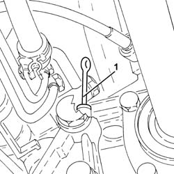
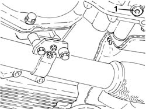
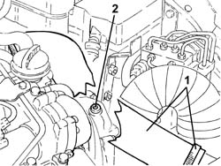

0010T40 MANUAL GEARBOX OIL - Check level and top up, if necessary
- Path
- Procedures > 00 MAINTENANCE > 0010 NEW UNITS AND PLANNED MAINTENANCE'. > 0010T vehicle oil and fluids > 0010T40 MANUAL GEARBOX OIL - Check level and top up, if necessary
- Kind
- repair procedure (removal / refitting; the operation number is the code)
- Applies to
- engines: 2.0 JTS, 3.2 V6, 1.9 JTD 16v, 2.0 JTS, 2.4 JTD 20v; all production periods
- Interactive page
- https://sloeber94.github.io/elrnDB-a156/en/#/3237410
Applies to: engines: 3.2 V6; all production periods
Proceed with 2110A04 Manual gearbox and differential OIL - Check level and top up, if necessary .
Applies to: engines: 2.0 JTS, 2.0 JTS; all production periods
Proceed with 2110A04 Manual gearbox and differential OIL - Check level and top up, if necessary .
Applies to: engines: 1.9 JTD 16v; all production periods
Position the vehicle on the ramp.
Proceed with removal 7055B54 under-engine guard - r r .
1. Using the dipstick, check that the level of the transmission fluid for the manual gearbox and differential coincides with the reference on the dipstick.
If necessary, top up the level using the recommended fluid, through the dipstick seating.
 | Type | Component | Name | Qty. |
|---|---|---|---|---|
- | Oli [l] | MANUAL GEARBOX | Tutela ZC 75 SYNTH | 2.01 |

Applies to: engines: 1.9 JTD 16v; all production periods
Check the level of the fluid once again, then return the dipstick.
Proceed with refitting 7055B54 under-engine guard - r r .
Remove the car from the ramps.
Applies to: engines: 2.4 JTD 20v; all production periods
Position the vehicle on the ramp.
Proceed with removal 1016A10 sound-proofing cover - r + r .
Proceed with removal 7040D10 engine bay lh or rh side cover(one) - r r .
Proceed with removal 7055B54 under-engine guard - r r .
1. Undo the gearbox oil drain plug and drain the oil.

Applies to: engines: 2.4 JTD 20v; all production periods
1. Loosen the bands and remove the air supply duct from heat exchanger to inlet manifold.
2. Undo the gearbox oil filler plug and wait for the oil to flow out completely.

Applies to: engines: 2.4 JTD 20v; all production periods
Tighten the new gearbox oil level check plug to the specified torque.
 | Fastening | Component | Ø | Value (daNm) |
|---|---|---|---|---|
- | Connector | GEAR CASING PADS | - | 5.0 |
Insert oil of the specified type and of the required quantity through the filler hole.
| Type | Component | Name | Qty. |
|---|---|---|---|---|
2 | Oli [l] | MANUAL GEARBOX | TUTELA CAR MATRYX | 2.9 |
If refilling after dismantling the gearbox, the oil quantity is as indicated below.
| Type | Component | Name | Qty. |
|---|---|---|---|---|
2 | Oli [l] | MANUAL GEARBOX | TUTELA CAR MATRYX | 3.1 |
Tighten the filler plug to the specified torque.
| Fastening | Component | Ø | Value (daNm) |
|---|---|---|---|---|
- | Connector | GEAR CASING PADS | - | 5.0 |
Refit the air supply duct from heat exchanger to inlet manifold and tighten the relevant bands.
Proceed with refitting 7055B54 under-engine guard - r r .
Proceed with refitting 7040D10 engine bay lh or rh side cover(one) - r r .
Proceed with refitting 1016A10 sound-proofing cover - r + r .
Remove the car from the ramps.